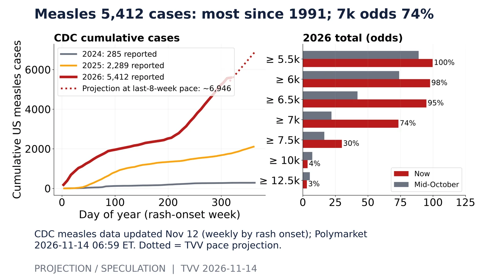
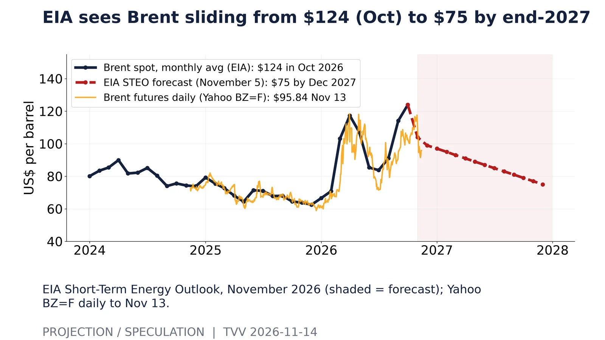
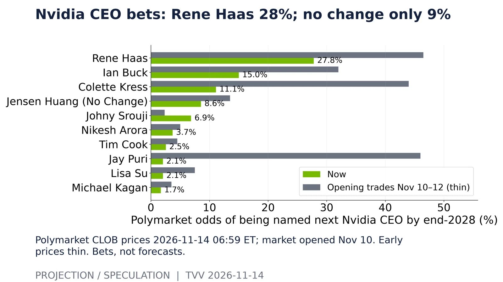
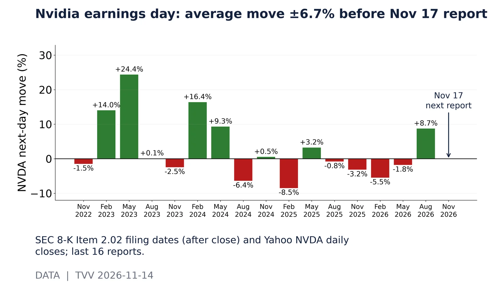

Microsoft exploited flaws: 41 in 2026, above 2025's 39. CISA KEV snapshot 2026-11-14 06:59 ET; Microsoft entries by year added and product family. 2022 includes backlog loading. Source: https://www.cisa.gov/known-exploited-vulnerabilities-catalog
The AI bill arrives: big-5 depreciation $45B a quarter, +50% y/y. SEC XBRL cash-flow statements, Depreciation tag, quarterly (derived from year-to-date), calendar-aligned to 2026Q3. Source: https://data.sec.gov/api/xbrl/companyfacts/CIK0000789019.json
Pandemic bets fade: new 2026 pandemic 4.5% → 1.6%. Polymarket 6-hour CLOB prices since mid-Oct to 2026-11-14 06:59 ET. Bets, not forecasts. Source: https://polymarket.com/event/new-pandemic-in-2026

Measles 5,412 cases: most since 1991; 7k odds 74%. CDC measles data updated Nov 12 (weekly by rash onset); Polymarket 2026-11-14 06:59 ET. Dotted = TVV pace projection. Source: https://www.cdc.gov/measles/data-research/index.html

EIA sees Brent sliding from $124 (Oct) to $75 by end-2027. EIA Short-Term Energy Outlook, November 2026 (shaded = forecast); Yahoo BZ=F daily to Nov 13. Source: https://www.eia.gov/outlooks/steo/
Crash bets jump: Bitcoin $65,000-dip odds +51 pts to 80%. Polymarket Gamma API 2026-11-14 06:59 ET; non-sports markets over $1M volume; 7-day YES price change. Bets, not forecasts. Source: https://polymarket.com/markets

Nvidia CEO bets: Rene Haas 28%; no change only 9%. Polymarket CLOB prices 2026-11-14 06:59 ET; market opened Nov 10. Early prices thin. Bets, not forecasts. Source: https://polymarket.com/event/next-ceo-of-nvidia

Nvidia earnings day: average move ±6.7% before Nov 17 report. SEC 8-K Item 2.02 filing dates (after close) and Yahoo NVDA daily closes; last 16 reports. Source: https://data.sec.gov/submissions/CIK0001045810.json
AI Hypergrowth Risks: big-4 capex $202B a quarter vs Nvidia $96B (Jul qtr). SEC XBRL cash-flow capex (quarterly from YTD) and Nvidia revenue, calendar-aligned; Nvidia Oct quarter due Nov 17. Source: https://data.sec.gov/api/xbrl/companyfacts/CIK0000789019.json